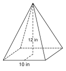

8.3 Surface Area and Nets
- Match a net to a solid and tell if a net folds into a cube
- Find the surface area of a prism and a cylinder
- Find the slant height and the surface area of a pyramid and a cone
- Find the surface area of a sphere
Warm-Up
1.
2.
3.
8.3.1Nets
- A net is a solid cut open and laid . It shows every .
- The surface area of a solid is the of its net.


A:
B:
C:
8.3.2Prisms
- Lateral area L = , where P is the .
- Surface area SA = , where B is the area of .

Top and bottom:
Front and back:
Left and right:
SA =

B = 12(4)(3) =
P = 3 + 4 + 5 =
L = Ph =
SA =
8.3.3Cylinders
- Lateral area =
- SA =

SA = 2π(3)2 + 2π(3)(8)
=
≈

SA = 2π(10)2 + 2π(10)(12) =
≈
1382.3 ÷ 350 ≈
Gallons to buy: (round )
8.3.4Pyramids, Cones, and Spheres
- The slant height ℓ is measured along a . Find it with the .
- Regular pyramid: SA =
- Cone: SA =
- Sphere: SA =
B = P =
SA =

Half the base =
ℓ2 = , so ℓ =
SA =

ℓ2 = 42 + 32, so ℓ =
SA = π(4)2 + π(4)(5) =
≈
1. A is a solid laid flat. Surface area is the area of the net.
2. Prism: SA = Ph + 2B. P is the of the base.
3. Pyramids and cones use the , not the height.
4. Surface area is measured in units.
Practice
Nets

1. Name the solid that each net folds into.

2. Which of the nets D, E, and F fold into a cube? Explain what is wrong with the other one.
3. A net is two circles and one rectangle. The circles have radius 3 in. How long is the rectangle? Give the exact answer and a decimal rounded to the nearest tenth.
Prisms
4. Find the surface area of a box that is 10 cm by 6 cm by 4 cm.
5. Find the surface area of a cube with edge 7.5 in.
6. The bases of a prism are right triangles with sides 6, 8, and 10 ft. The prism is 15 ft long. Find the surface area.
7. A rectangular prism has a base 12 in by 5 in and a height of 9 in. Find the lateral area.
8. Lucía wraps a gift box that is 14 in by 10 in by 6 in. She buys 10% more paper than the surface area, to allow for overlap. How much paper does she buy? Round to the nearest square inch.
9. A box has a base 6 ft by 4 ft and a surface area of 148 square feet. Find its height.
10. Find the mistake. Moses says the surface area of a box 5 ft by 3 ft by 2 ft is 5 · 3 · 2 = 30 square feet. What did he find, and what is the correct surface area?
Cylinders
11. Find the surface area of a cylinder with r = 5 in and h = 9 in. Give the exact answer and a decimal rounded to the nearest tenth.
12. A soup can has radius 3.4 cm and height 10 cm. Find the area of its label (the side only). Give the exact answer and a decimal rounded to the nearest tenth.
13. A closed tank has radius 6 ft and height 15 ft. One gallon of paint covers 300 square feet. How many whole gallons are needed to paint the whole outside?
14. A cylinder with radius 4 m has a surface area of 96 π square meters. Find its height.
Pyramids, Cones, and Spheres
15. A square pyramid has base side 8 in and slant height 7 in. Find the surface area.
16. A square pyramid has base side 16 cm and height 15 cm. Find the slant height and the surface area.
17. A cone has radius 3 ft and slant height 7 ft. Find the surface area. Give the exact answer and a decimal rounded to the nearest tenth.
18. A cone has radius 8 cm and height 15 cm. Find the surface area. Give the exact answer and a decimal rounded to the nearest tenth.
19. The triangle with vertices (0, 0), (6, 0), and (0, 8) spins around the y-axis. Find the surface area of the cone. Give the exact answer and a decimal rounded to the nearest tenth.
20. Find the mistake. Ana says a cone with r = 5 and h = 12 has SA = π(5)2 + π(5)(12) = 85 π. Find the correct surface area.
21. A tent is a cone with no floor. The radius is 7 ft and the height is 24 ft. How much fabric does it use? Give the exact answer and a decimal rounded to the nearest tenth.
22. A sphere has radius 9 in. Find its surface area. Give the exact answer and a decimal rounded to the nearest tenth.
23. A sphere has surface area 100 π square centimeters. Find its radius.
24. A dome is half a sphere with radius 12 ft. It has no floor. Find the area of the curved surface. Give the exact answer and a decimal rounded to the nearest tenth.
Test Practice
A. 314.2 square inches
B. 471.2 square inches
C. 785.4 square inches
D. 942.5 square inches
A. 5 in
B. 6.5 in
C. 25 in
D. 50 in